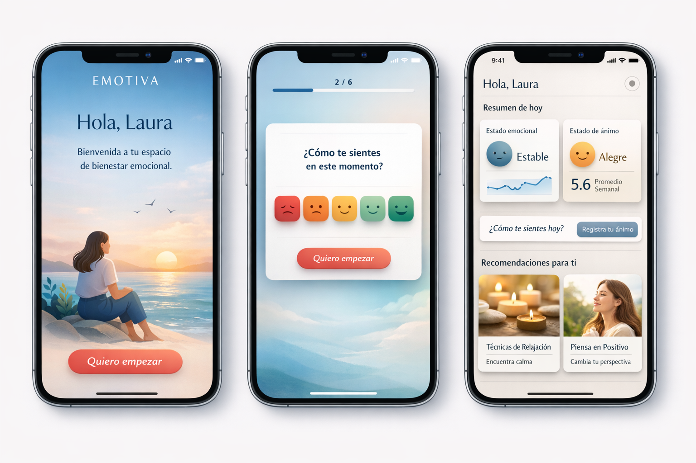
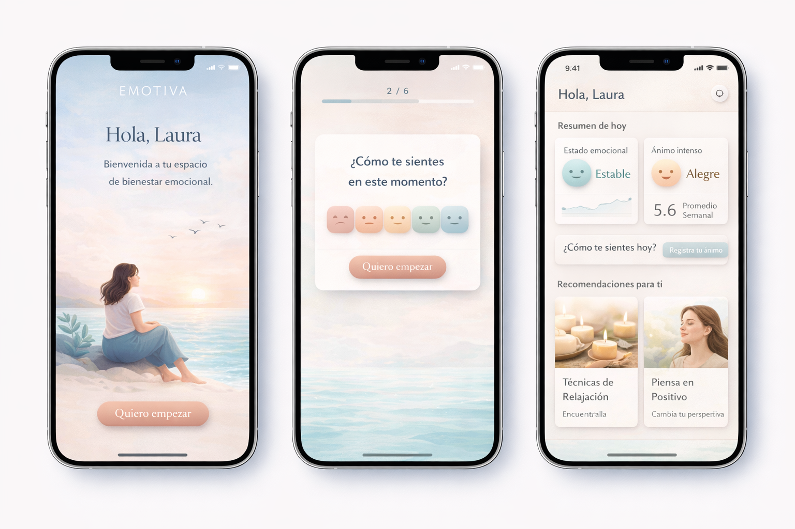

Línea Premium Calm
Dirección más elegante y sobria, con una lectura de producto de salud-tech emocional de gama alta. Funciona bien si se quiere proyectar un producto más maduro y diferencial.
Documento de trabajo para presentar una evolución visual completa de la app, con una línea más cálida, premium, serena y coherente. El objetivo es demostrar alcance, complejidad, tiempos estimados y dirección creativa suficiente para tomar una decisión informada a nivel de producto.
Sí es viable cambiar por completo la interfaz de EMOTIVA sin romper la lógica principal de la app, siempre que se aborde como una modernización del sistema visual y no como una simple capa de maquillaje. La app actual tiene una base suficiente para evolucionar, pero su tamaño y el número de componentes aconsejan trabajar por fases.
Esto confirma que no se trata de una app pequeña ni de una interfaz aislada. El rediseño debe contemplar navegación, formularios, popups, evaluación, dashboard, secciones de ejercicios, cuaderno terapéutico, recursos, chatbot y ajustes.
| Escenario | Alcance | Horas estimadas |
|---|---|---|
| Opción A. Restyling visual controlado | Nueva apariencia, mejora de componentes base y ajuste de pantallas clave sin rehacer toda la arquitectura visual. | 120-200 horas |
| Opción B. Rediseño completo de interfaz | Sistema visual nuevo, rediseño de componentes, pantallas core, módulos secundarios, QA multiplataforma y refinado. | 660 horas |
| Opción C. Rediseño completo + temas personalizables | Todo lo anterior, más soporte para varios temas visuales, preferencias por usuario y QA ampliado. | 840 horas |
Para una propuesta sólida y creíble, la mejor recomendación es presentar la Opción B como base y la Opción C como evolución estratégica.
| Fase | Contenido | Horas |
|---|---|---|
| Fase 0. Auditoría funcional y visual | Inventario de pantallas, componentes, deuda visual y riesgos técnicos. Definición del alcance real. | 20 h |
| Fase 1. Dirección visual y sistema de diseño | Paleta, tipografía, espaciado, radios, sombras, elevación, overlays, lenguaje iconográfico y tokens base. | 60 h |
| Fase 2. Arquitectura de UI | Normalización de componentes base: botones, cards, inputs, selects, tabs, modales, alerts, toasts y contenedores. | 120 h |
| Fase 3. Rediseño de pantallas core | Bienvenida, login, registro, evaluación, resultados, dashboard, navegación principal y estados asociados. | 180 h |
| Fase 4. Rediseño de módulos secundarios | Paths, cuaderno terapéutico, historial, recursos, chatbot, emotional log, settings y pantallas auxiliares. | 140 h |
| Fase 5. Responsive, accesibilidad y QA | Pruebas en móvil, escritorio, iPhone dentro de Capacitor, overlays, teclado, scroll, contraste y regresión visual. | 80 h |
| Fase 6. Iteraciones con stakeholders | Feedback interno, cambios de criterio, refinado y ajuste final antes de release. | 60 h |
| Fase 7. Temas personalizables | Arquitectura de temas, selector, persistencia y QA por combinaciones visuales. | 180 h |
Dirección visual propuesta: bienestar emocional premium, suave, luminosa, segura y humana. La intención es alejarse de una interfaz técnica o clínica y acercar la percepción a un cuaderno de bienestar contemporáneo.
#FFF9F3 o #FFFCF9#2F3A40#6F6A66#A9D5BF#DCEFFDDebe transmitir calma, cuidado y confianza desde el primer segundo.
Responder debe sentirse ligero, guiado y humano.
Los datos deben sentirse útiles, no fríos.
Interrumpir poco y acompañar mucho.
A continuación se incluyen dos direcciones visuales generadas como referencia conceptual. No sustituyen un diseño final, pero ayudan a visualizar el tono deseado y a validar preferencias con stakeholders.

Dirección más elegante y sobria, con una lectura de producto de salud-tech emocional de gama alta. Funciona bien si se quiere proyectar un producto más maduro y diferencial.

Dirección más luminosa, cálida y amable. Probablemente más alineada con una experiencia de cuidado, suavidad y seguridad emocional desde el primer contacto.